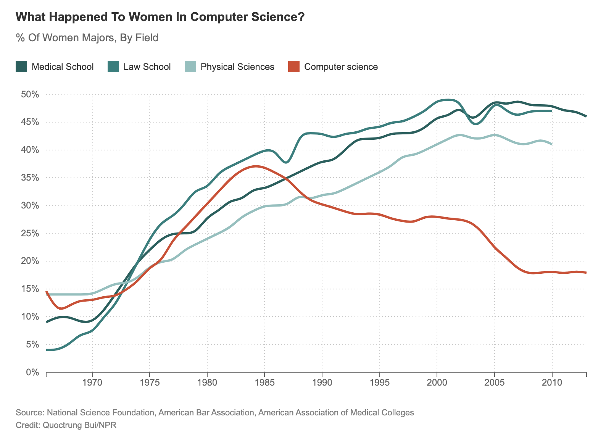

the research behind the logo

the inspiration for the new logo came when i was doing some research for a presentation on diversity in computer science. i came across this graph when researching the number for bachelor's degrees earned by women in computer science. the graph only shows data up until 2010, which you would think is out of date, but in all reality the statistics have only improved by about 3% since then. i wanted to make a logo from this graph to explain why the AGIC has to exist in the first place. until we see an equal distribution of bachelor's degrees in computing across genders, the club i run needs to exist to create a support system for those in the minority.
the logos

iteration 1 - essentially just a vector copy of the graph itself

iteration 2 - an exploration into representing the queerness that is also seen in the club

iteration 3 - putting the graph into context of both the timeline and the club itself, while keeping the rainbow symbolism

iteration 4 - a more simplistic logo idea with the graph extending to the (al)most current data

iteration 5 - recreating the graph logo with a new color pallete my officers and i decided on, with gender neutral colors and trying on a new font